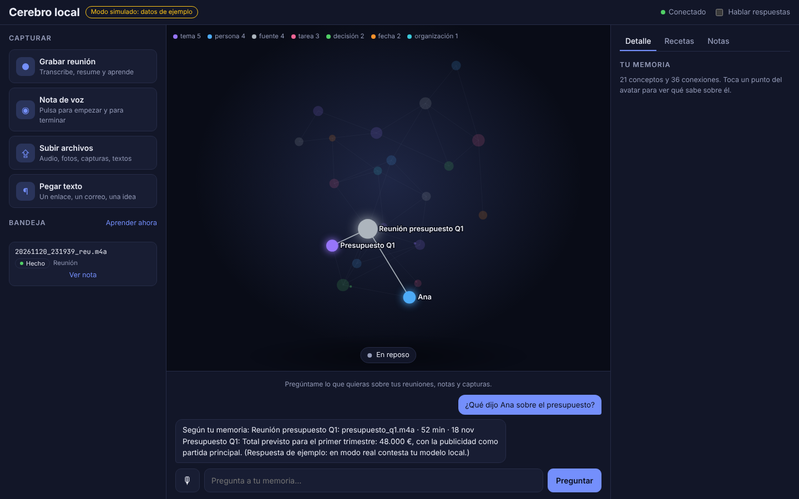
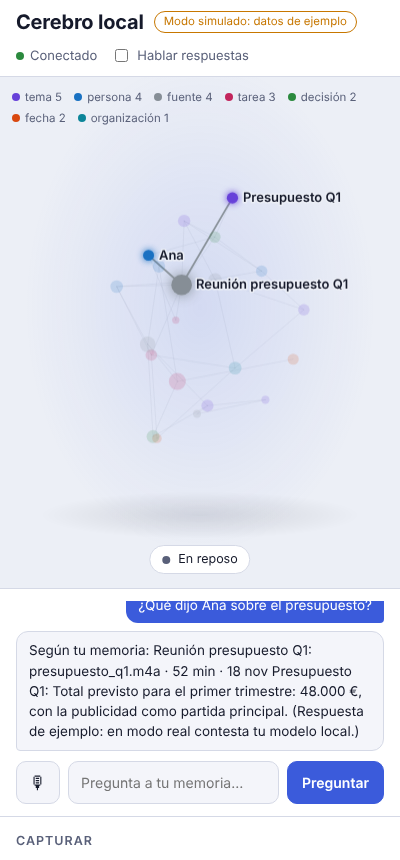
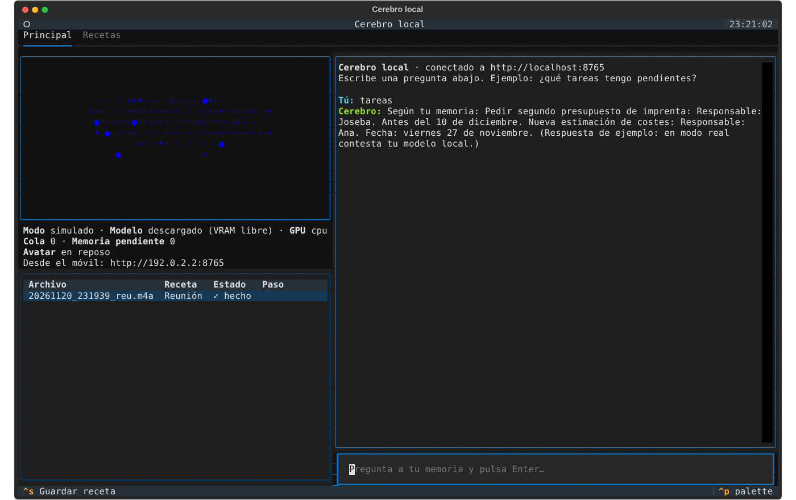

Tu asistente personal que vive en tu PC: escucha tus reuniones, lee tus fotos y notas, aprende de todo ello y te responde. Nada sale de tu casa.
Cerebro reparte el trabajo entre dos aparatos:
Lo que aprende se guarda en Cognee, una memoria en forma de grafo: personas, proyectos, decisiones, fechas y cómo se relacionan. Ese grafo es el avatar que flota en el centro de la pantalla. Crece con cada cosa que aprende, se ilumina cuando piensa y te muestra de dónde saca cada respuesta.
| Pieza | Mínimo | Tu equipo |
|---|---|---|
| Tarjeta gráfica | NVIDIA con 6 GB (o cualquier GPU con Vulkan; o solo CPU, más lento) | RTX 4050 6 GB ✓ |
| Memoria RAM | 12 GB (16 GB va más holgado) | ~12 GB ✓ |
| Disco | 20 GB libres (programa ~3 GB + modelos ~10 GB + tus datos) | |
| Sistema | Windows 10/11 de 64 bits, o Linux x86-64 (Ubuntu 24.04 probado en live) | |
| Driver NVIDIA | 576 o superior (CUDA 12.9) | Actualízalo desde la app de NVIDIA |
| Móvil | Android 8 o superior, en la misma Wi-Fi que el PC (o con Tailscale) | Android ✓ |
La versión de Windows es portable: no se instala, es una carpeta que lleva dentro todo lo necesario (Python, el motor llama.cpp con CUDA y las librerías).
Cerebro-windows-x64.zip en una carpeta con espacio, por ejemplo D:\Cerebro.Cerebro.bat con doble clic. Se abre una ventana negra (el servidor) y, a los pocos segundos, el navegador en http://localhost:8765.Haz clic derecho en instalar-servicio.bat y elige Ejecutar como administrador. Desde ese momento Cerebro se pone en marcha al encender el ordenador, aunque nadie inicie sesión en Windows: la GPU funciona igual sin escritorio. El script también abre el puerto 8765 en el cortafuegos (solo redes privadas) y te muestra la dirección IP que tienes que escribir en el móvil.
Para quitarlo: desinstalar-servicio.bat, también como administrador. Tus datos no se tocan.
Puedes probar Cerebro arrancando el portátil desde un USB con Ubuntu 24.04, sin tocar Windows. El AppImage es un único archivo que lleva dentro Python, llama.cpp con CUDA 12.9 (y Vulkan y CPU como respaldo), todas las librerías y el driver NVIDIA 580 listo para instalarse en la sesión live sin conexión.
cerebro-datos junto al AppImage. Pon el AppImage en un USB o partición con espacio (mínimo 16 GB libres) y tus datos y modelos sobrevivirán.Cerebro-x86_64.AppImage a un segundo USB o a una partición de datos y dale permiso de ejecución: clic derecho → Propiedades → Ejecutable, o en una terminal chmod +x Cerebro-x86_64.AppImage../Cerebro-x86_64.AppImage preparar-usb. Descarga los modelos (unos 10 GB) y el driver NVIDIA exacto para el kernel de tu live y lo deja todo en cerebro-datos../Cerebro-x86_64.AppImage activar-nvidia (te pedirá la contraseña de sudo; en la live está vacía, pulsa Intro). Al terminar verás el nombre de tu RTX 4050 y la versión del driver../Cerebro-x86_64.AppImage. Abre http://localhost:8765 en Firefox../Cerebro-x86_64.AppImage tui.Si ya hay modelos en cerebro-datos/modelos, Cerebro entra solo en modo autónomo y no intenta conectarse a internet.
| Mensaje | Qué hacer |
|---|---|
| «No tengo el driver para el kernel…» | Tu live usa un kernel distinto de los incluidos (6.17.0-14 y 7.0.0-14). Con internet ejecuta preparar-usb una vez: descargará el driver para ese kernel. |
| «nouveau está en uso» | Reinicia la live. En el menú de arranque pulsa e, añade modprobe.blacklist=nouveau nouveau.modeset=0 al final de la línea que empieza por linux y arranca con F10. |
| «No se pudo cargar el módulo» | Los módulos van firmados por Canonical y suelen cargar con Secure Boot. Si no, desactiva Secure Boot en la BIOS para la prueba. |
Si no activas la NVIDIA, Cerebro funciona igual con Vulkan o con la CPU, solo que más despacio.
Cerebro.apk al móvil y ábrelo. Android pedirá permiso para instalar apps de origen desconocido: concédelo solo para esta instalación.http://192.168.1.40:8765. La ves al ejecutar instalar-servicio.bat, o en Windows con ipconfig (línea «IPv4»).Puedes cambiar la dirección en cualquier momento con el botón Servidor de la barra superior. Si estás fuera de casa, instala Tailscale en el PC y en el móvil y usa la dirección de Tailscale del PC.
https. En ese caso los botones de grabar abren la grabadora del sistema. La app no tiene esa limitación.

Cada punto es algo que Cerebro sabe: una persona, un tema, una tarea, una decisión, una fecha, una organización o una fuente (la grabación o nota de donde salió). La leyenda de arriba muestra los colores y cuántos hay de cada tipo.
Abajo del avatar ves si está en reposo, escuchando (grabando), pensando, hablando o aprendiendo. Todas las pantallas conectadas ven lo mismo a la vez.
| Botón | Qué hace | Receta por defecto |
|---|---|---|
| Grabar reunión | Graba hasta que pulses Parar y enviar. Sigue grabando aunque apagues la pantalla. | Reunión: transcribe separando quién habla, resume, saca decisiones y tareas, guarda la nota y la aprende esa noche. |
| Nota de voz | Pulsa para empezar y otra vez para terminar. | Nota de voz: transcribe, ordena la idea y la aprende al momento. |
| Subir archivos | Audios, fotos, capturas de pantalla, archivos .txt o .md. | Según el tipo: reunión para audio, foto para imágenes, texto para documentos. |
| Pegar texto | Un enlace, un correo o una idea. | Texto: lo resume y lo aprende. |
Compartir desde otras apps: en el móvil, en cualquier app (galería, WhatsApp, navegador, correo) pulsa Compartir → Cerebro. Los archivos van directos a la bandeja y los textos aparecen en el cuadro de pegar.
Si el PC no está disponible cuando terminas una grabación, la app la guarda y la vuelve a enviar sola la próxima vez que la abras.
Cada captura aparece en la bandeja con su estado: En cola, Procesando (con el paso por el que va), Hecho, Memoria esta noche o Error (con un botón para reintentar). Cuando termina, Ver nota abre el resultado. También puedes dejar archivos directamente en la carpeta datos/bandeja del PC: Cerebro los recoge solo.
Escribe en el cuadro de abajo o pulsa 🎙 para preguntar por voz (pulsa una vez para hablar y otra para enviar). Ejemplos:
Cerebro busca primero en el grafo de Cognee y, si hace falta, en tus notas. Debajo de cada respuesta indica las fuentes. Marca Hablar respuestas arriba a la derecha para que te las lea en voz alta.
Una receta es una lista de pasos que se ejecuta con cada captura. Se editan en la pestaña Recetas (o en la TUI, guardando con Ctrl+S) y se guardan como archivos .yaml en la carpeta recetas. Ejemplo: una receta clase (archivo recetas/clase.yaml) que transcribe una clase y saca un esquema. Se usa con los audios que dejes en datos/bandeja/clase/.
nombre: Clase
descripcion: Transcribe una clase y saca un esquema para estudiar.
cuando:
extensiones: [] # no se elige por tipo: solo por su carpeta de la bandeja
pasos:
- transcribir:
separar_voces: false
- preguntar_llm:
perfil: texto
trocear: 2500
guardar_como: esquema
prompt: |
Haz un esquema de estudio en Markdown de esta clase:
{transcripcion}
- guardar_nota:
carpeta: clases
titulo: "Clase {fecha}"
contenido: "{esquema}"
- recordar:
contenido: "{nota}"
de_noche: true| Paso | Para qué | Opciones |
|---|---|---|
transcribir | Voz a texto con marcas de minuto y quién habla | separar_voces |
preguntar_llm | Pedir algo al modelo | perfil (texto, rapido, vision), prompt, guardar_como, trocear, max_tokens |
describir_imagen | Leer una foto o captura | prompt, guardar_como |
guardar_nota | Crear una nota Markdown | titulo, contenido, carpeta |
recordar | Añadir a la memoria | contenido, de_noche: true para dejarlo a la hora nocturna |
avisar | Mostrar un aviso en todas las pantallas | mensaje |
Variables que puedes usar entre llaves: {archivo}, {nombre}, {fecha}, {hora}, {transcripcion}, {duracion}, {personas}, {contenido}, {nota} y cualquier nombre que hayas puesto en guardar_como.
Qué receta se usa: la que elijas al subir; si no, la de la subcarpeta de la bandeja donde cae el archivo; si no, la que corresponde a su extensión con menor prioridad.
Construir el grafo es lo más costoso, así que las reuniones largas se aprenden de noche (a las 3:00 por defecto; se cambia en config.yaml, hora_nocturna). Las notas de voz y los textos se aprenden al momento. Con Aprender ahora, en la bandeja, procesas la cola sin esperar.
| Carpeta | Contenido |
|---|---|
datos/notas | Tus notas en Markdown. Son la fuente de verdad: se pueden leer con cualquier editor y sirven para reconstruir la memoria. |
datos/archivo | Los originales (audios, fotos) ya procesados, por meses. |
datos/memoria | Las bases de datos de Cognee (grafo y vectores). |
datos/bandeja | Lo que está por procesar. |
modelos | Modelos de lenguaje, voz y embeddings. |
Para hacer una copia de seguridad basta con copiar la carpeta datos.

Arráncala con Cerebro-TUI.bat en Windows o ./Cerebro-x86_64.AppImage tui en Linux. Se conecta al servidor que ya está en marcha; para usarla desde otro equipo: tui --url http://IP:8765.
| Tecla | Acción |
|---|---|
| Intro | Enviar la pregunta |
| a | Aprender ahora |
| r | Recargar bandeja y recetas |
| Ctrl+S | Guardar la receta que estás editando |
| q | Salir |
| Qué pasa | Solución |
|---|---|
| El móvil dice «No encuentro tu PC» | Comprueba que Cerebro está en marcha en el PC, que ambos están en la misma Wi-Fi y que el cortafuegos permite el puerto 8765 en redes privadas (instalar-servicio.bat lo configura). |
| La primera respuesta tarda mucho | Es la carga del modelo en la GPU (unos segundos) o la descarga inicial. Después va rápido. Si no lo usas en 10 minutos, libera la memoria de la GPU. |
| Error de memoria de la GPU | Cierra juegos u otras apps que usen la GPU, o baja capas_gpu en config.yaml (por ejemplo a 28). |
| Detecta demasiadas o muy pocas personas | Sube o baja umbral_voces en config.yaml, o fija num_personas. |
| Quiero probar sin modelos | Arranca en modo simulado: Cerebro.bat simulado o ./Cerebro-x86_64.AppImage simulado. |
| Dónde ver qué ha pasado | Registros en datos/estado/cerebro.log y datos/estado/llama-server.log. |